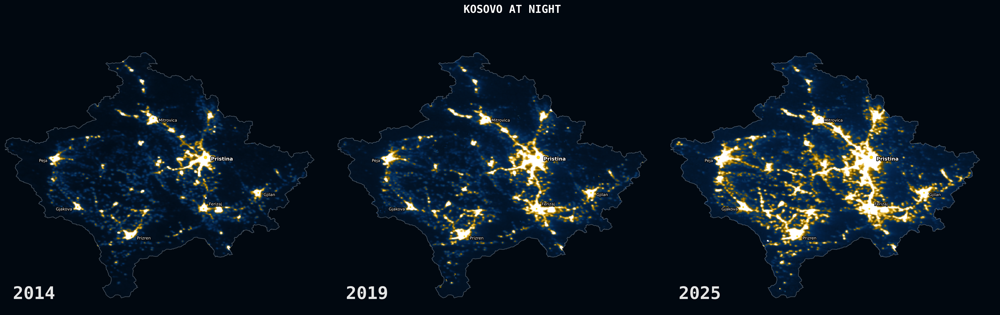
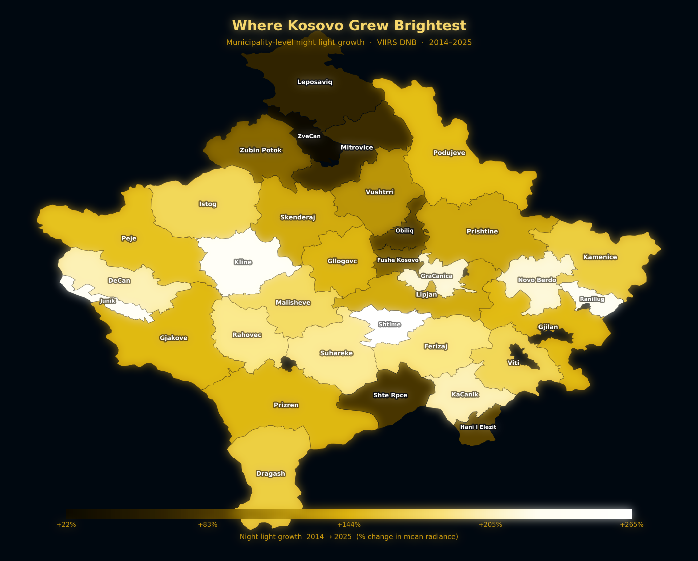

Data Science Portfolio
I am completing a fully funded Master's in Data Science at the Barcelona School of Economics. With a background in applied economics, I use machine learning, NLP, and spatial analysis to study prediction, user behavior, and language data.
Master's Thesis · Virtuleap · Enhance VR
Can a VR cognitive training platform predict how well a user will perform by the end of a session, using only the first few minutes of gameplay?
Working with real session data from Virtuleap's Enhance VR platform, we trained a Transformer model on sequences of trial-level user behavior (reaction time, accuracy, streaks, variability) to predict final session scores early. We then tested whether the model's learned representations transfer to other games on the platform, fine-tuning with a small number of sessions from each new game rather than retraining from scratch.
Forecasting · Panel Data
Can we predict whether a US state will experience an unemployment shock three months before it shows up in official data?
Built a panel dataset of 51 US states across 15 years using BLS unemployment data, macroeconomic indicators from FRED, and Google Trends search signals. Trained a Random Forest classifier using a rolling expanding-window setup to mimic real-time forecasting conditions. Because shock onsets are rare events, we evaluated models using precision-recall metrics and framed the final results around the decision costs facing state labor agencies.
NLP · Text Mining
Does the EU use systematically harsher or softer language toward some candidate countries, and does this depend on the topic being discussed?
Scraped and segmented EU progress reports across 10 candidate countries into 26,800 paragraphs. Built a keyword dictionary distinguishing hard criticism from soft diplomatic hedging, scored each paragraph, and ran regression models with country and topic fixed effects to see what drives differences in tone beyond what each country is simply being written about.
Geospatial Analysis · R
Do armed conflicts in the Middle East tend to happen near oil infrastructure, and if so, at what distance does that pattern become visible?
Combined conflict event data from ACLED with oil plant locations from the Global Oil and Gas Plant Tracker across 8 countries. Used buffer zones, nearest-neighbor distances, and spatial join operations in R to measure proximity between conflict and infrastructure at multiple scales, then tested whether the observed patterns were statistically meaningful or could be explained by chance.
Network Science · Simulation
How many friends need to listen to a music genre before you adopt it yourself, and does that number differ across countries with different social network structures?
Used friendship and genre data from Deezer across Croatia, Hungary, and Romania. First characterized the structure of each network, then simulated how genres spread using a threshold contagion model: a user adopts a genre once enough of their neighbors already listen to it. Rather than fixing that threshold in advance, we calibrated it by comparing simulated genre distributions against real Spotify streaming data.
Portfolio Project · Remote Sensing
Using NASA satellite imagery and nighttime radiance as a proxy for economic activity, how has development spread across Kosovo's 38 municipalities from 2014 to 2025?
Pulled VIIRS DNB composites from NOAA via Google Earth Engine and built a set of visualizations: a national radiance time series, year-over-year growth charts, a regional comparison against neighboring Balkan countries, and a municipality-level choropleth mapping where Kosovo grew brightest over the decade.

